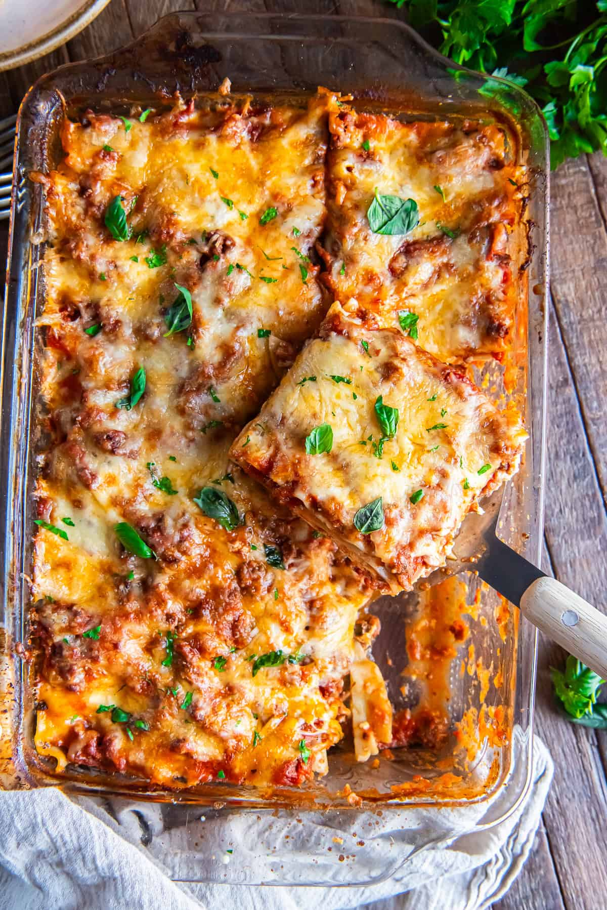

Lasagna
Home

Description
This comforting lasagna layers tender pasta with a rich tomato and beef sauce, creamy ricotta, and mozzarella. It bakes until bubbling and golden on top.
Ingredients
- 9 lasagna noodles
- 450 g ground beef
- 700 ml tomato pasta sauce
- 425 g ricotta cheese
- 1 egg
- 2 cups shredded mozzarella
- 1/2 cup grated Parmesan
- 1 teaspoon dried oregano
- Salt and black pepper
Steps
- Heat the oven to 190°C (375°F). Cook the noodles according to the package, then drain.
- Brown the beef in a skillet. Stir in the tomato sauce, oregano, salt, and pepper.
- Mix the ricotta with the egg and half of the Parmesan.
- Spread a little meat sauce in a baking dish. Layer noodles, ricotta, meat sauce, and mozzarella; repeat, finishing with sauce and remaining cheeses.
- Cover with foil and bake for 25 minutes. Uncover and bake 15 minutes more until golden and bubbling. Rest 10 minutes before serving.